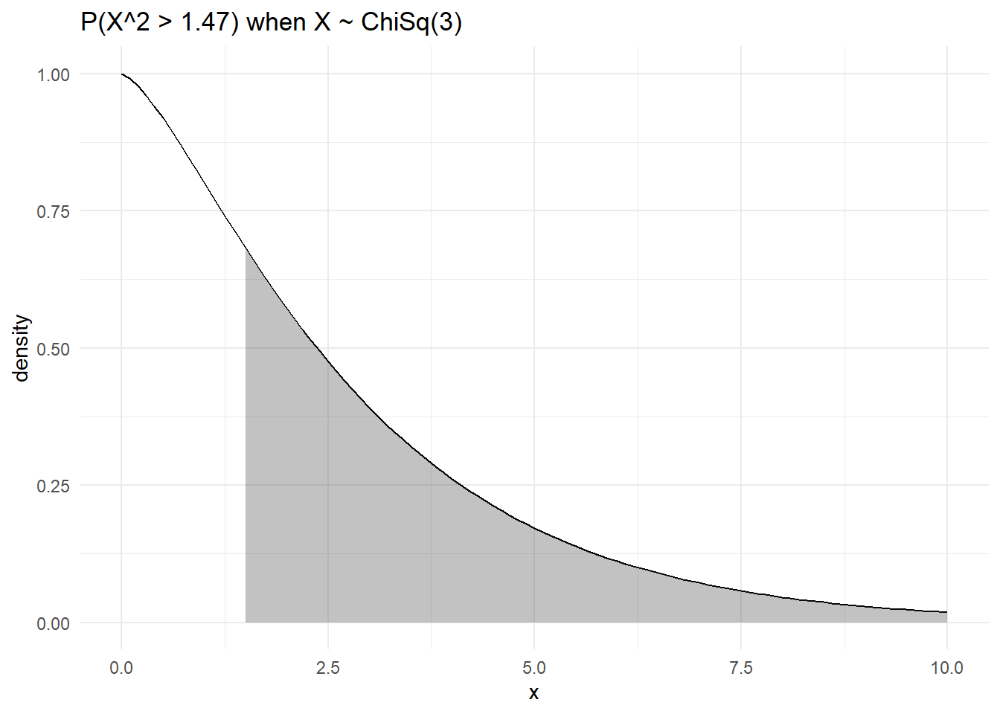
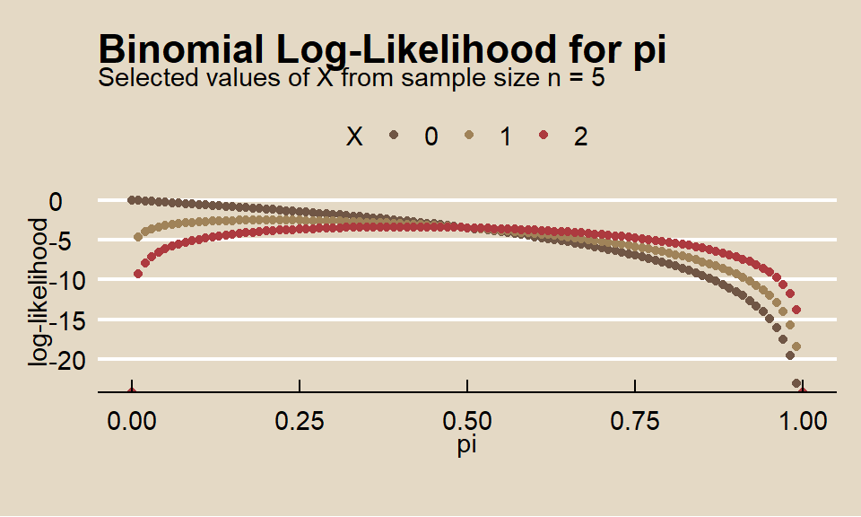

9.5 Gradient Boosting
Note: I learned gradient boosting from explained.ai.
Gradient boosting machine (GBM) is an additive modeling algorithm that gradually builds a composite model by iteratively adding M weak sub-models based on the performance of the prior iteration’s composite,
\[F_M(x) = \sum_m^M f_m(x).\]
The idea is to fit a weak model, then replace the response values with the residuals from that model, and fit another model. Adding the residual prediction model to the original response prediction model produces a more accurate model. GBM repeats this process over and over, running new models to predict the residuals of the previous composite models, and adding the results to produce new composites. With each iteration, the model becomes stronger and stronger. The successive trees are usually weighted to slow down the learning rate. “Shrinkage” reduces the influence of each individual tree and leaves space for future trees to improve the model.
\[F_M(x) = f_0 + \eta\sum_{m = 1}^M f_m(x).\]
The smaller the learning rate, \(\eta\), the larger the number of trees, \(M\). \(\eta\) and \(M\) are hyperparameters. Other constraints to the trees are usually applied as additional hyperparameters, including, tree depth, number of nodes, minimum observations per split, and minimum improvement to loss.
The name “gradient boosting” refers to the boosting of a model with a gradient. Each round of training builds a weak learner and uses the residuals to calculate a gradient, the partial derivative of the loss function. Gradient boosting “descends the gradient” to adjust the model parameters to reduce the error in the next round of training.
In the case of classification problems, the loss function is the log-loss; for regression problems, the loss function is mean squared error. GBM continues until it reaches maximum number of trees or an acceptable error level.
9.5.0.1 Gradient Boosting Classification Example
I’ll predict Purchase from the OJ data set again, this time using the GBM method by specifying method = "gbm". gbm has the following tuneable hyperparameters (see modelLookup("gbm")).
n.trees: number of boosting iterations, \(M\)interaction.depth: maximum tree depthshrinkage: shrinkage, \(\eta\)n.minobsinnode: mimimum terminal node size
I’ll use tuneLength = 5.
set.seed(1234)
oj_mdl_gbm <- train(
Purchase ~ .,
data = oj_train,
method = "gbm",
tuneLength = 5,
trControl = oj_trControl
)## Iter TrainDeviance ValidDeviance StepSize Improve
## 1 1.2729 nan 0.1000 0.0296
## 2 1.2250 nan 0.1000 0.0250
## 3 1.1846 nan 0.1000 0.0221
## 4 1.1479 nan 0.1000 0.0178
## 5 1.1188 nan 0.1000 0.0128
## 6 1.0930 nan 0.1000 0.0130
## 7 1.0696 nan 0.1000 0.0114
## 8 1.0507 nan 0.1000 0.0089
## 9 1.0328 nan 0.1000 0.0072
## 10 1.0187 nan 0.1000 0.0066
## 20 0.9193 nan 0.1000 0.0025
## 40 0.8234 nan 0.1000 0.0005
## 60 0.7858 nan 0.1000 -0.0010
## 80 0.7666 nan 0.1000 -0.0010
## 100 0.7579 nan 0.1000 -0.0001
## 120 0.7509 nan 0.1000 -0.0007
## 140 0.7447 nan 0.1000 -0.0005
## 160 0.7394 nan 0.1000 -0.0002
## 180 0.7338 nan 0.1000 -0.0001
## 200 0.7292 nan 0.1000 -0.0007
## 220 0.7259 nan 0.1000 -0.0005
## 240 0.7222 nan 0.1000 -0.0009
## 250 0.7204 nan 0.1000 -0.0012
##
## Iter TrainDeviance ValidDeviance StepSize Improve
## 1 1.2662 nan 0.1000 0.0349
## 2 1.2068 nan 0.1000 0.0266
## 3 1.1624 nan 0.1000 0.0230
## 4 1.1230 nan 0.1000 0.0186
## 5 1.0876 nan 0.1000 0.0180
## 6 1.0556 nan 0.1000 0.0141
## 7 1.0268 nan 0.1000 0.0124
## 8 1.0002 nan 0.1000 0.0105
## 9 0.9802 nan 0.1000 0.0075
## 10 0.9601 nan 0.1000 0.0093
## 20 0.8410 nan 0.1000 0.0039
## 40 0.7669 nan 0.1000 -0.0003
## 60 0.7387 nan 0.1000 -0.0013
## 80 0.7202 nan 0.1000 -0.0020
## 100 0.7076 nan 0.1000 -0.0011
## 120 0.6892 nan 0.1000 -0.0009
## 140 0.6762 nan 0.1000 -0.0013
## 160 0.6680 nan 0.1000 -0.0008
## 180 0.6605 nan 0.1000 -0.0015
## 200 0.6519 nan 0.1000 -0.0008
## 220 0.6418 nan 0.1000 -0.0015
## 240 0.6328 nan 0.1000 -0.0007
## 250 0.6306 nan 0.1000 -0.0018
##
## Iter TrainDeviance ValidDeviance StepSize Improve
## 1 1.2535 nan 0.1000 0.0377
## 2 1.1930 nan 0.1000 0.0311
## 3 1.1360 nan 0.1000 0.0252
## 4 1.0891 nan 0.1000 0.0196
## 5 1.0520 nan 0.1000 0.0159
## 6 1.0180 nan 0.1000 0.0147
## 7 0.9846 nan 0.1000 0.0133
## 8 0.9553 nan 0.1000 0.0139
## 9 0.9336 nan 0.1000 0.0105
## 10 0.9150 nan 0.1000 0.0058
## 20 0.7989 nan 0.1000 0.0020
## 40 0.7300 nan 0.1000 -0.0018
## 60 0.6912 nan 0.1000 -0.0007
## 80 0.6669 nan 0.1000 -0.0006
## 100 0.6481 nan 0.1000 -0.0014
## 120 0.6275 nan 0.1000 -0.0015
## 140 0.6114 nan 0.1000 -0.0009
## 160 0.5970 nan 0.1000 -0.0016
## 180 0.5868 nan 0.1000 -0.0011
## 200 0.5727 nan 0.1000 -0.0013
## 220 0.5586 nan 0.1000 -0.0018
## 240 0.5432 nan 0.1000 -0.0008
## 250 0.5374 nan 0.1000 -0.0010
##
## Iter TrainDeviance ValidDeviance StepSize Improve
## 1 1.2593 nan 0.1000 0.0373
## 2 1.1862 nan 0.1000 0.0307
## 3 1.1262 nan 0.1000 0.0268
## 4 1.0792 nan 0.1000 0.0196
## 5 1.0320 nan 0.1000 0.0197
## 6 0.9935 nan 0.1000 0.0172
## 7 0.9620 nan 0.1000 0.0143
## 8 0.9358 nan 0.1000 0.0093
## 9 0.9112 nan 0.1000 0.0097
## 10 0.8911 nan 0.1000 0.0094
## 20 0.7721 nan 0.1000 0.0022
## 40 0.6974 nan 0.1000 -0.0018
## 60 0.6568 nan 0.1000 -0.0015
## 80 0.6273 nan 0.1000 -0.0020
## 100 0.6055 nan 0.1000 -0.0009
## 120 0.5835 nan 0.1000 -0.0011
## 140 0.5657 nan 0.1000 -0.0018
## 160 0.5468 nan 0.1000 -0.0020
## 180 0.5339 nan 0.1000 -0.0021
## 200 0.5208 nan 0.1000 -0.0004
## 220 0.5108 nan 0.1000 -0.0026
## 240 0.5002 nan 0.1000 -0.0008
## 250 0.4910 nan 0.1000 -0.0019
##
## Iter TrainDeviance ValidDeviance StepSize Improve
## 1 1.2498 nan 0.1000 0.0406
## 2 1.1806 nan 0.1000 0.0325
## 3 1.1216 nan 0.1000 0.0288
## 4 1.0715 nan 0.1000 0.0212
## 5 1.0283 nan 0.1000 0.0182
## 6 0.9935 nan 0.1000 0.0146
## 7 0.9629 nan 0.1000 0.0111
## 8 0.9352 nan 0.1000 0.0105
## 9 0.9068 nan 0.1000 0.0093
## 10 0.8816 nan 0.1000 0.0086
## 20 0.7662 nan 0.1000 0.0025
## 40 0.6844 nan 0.1000 -0.0017
## 60 0.6381 nan 0.1000 -0.0028
## 80 0.6018 nan 0.1000 -0.0020
## 100 0.5710 nan 0.1000 -0.0018
## 120 0.5402 nan 0.1000 -0.0021
## 140 0.5137 nan 0.1000 -0.0022
## 160 0.4950 nan 0.1000 -0.0015
## 180 0.4810 nan 0.1000 -0.0012
## 200 0.4687 nan 0.1000 -0.0029
## 220 0.4559 nan 0.1000 -0.0025
## 240 0.4427 nan 0.1000 -0.0019
## 250 0.4369 nan 0.1000 -0.0015
##
## Iter TrainDeviance ValidDeviance StepSize Improve
## 1 1.2817 nan 0.1000 0.0283
## 2 1.2326 nan 0.1000 0.0242
## 3 1.1940 nan 0.1000 0.0154
## 4 1.1582 nan 0.1000 0.0172
## 5 1.1267 nan 0.1000 0.0137
## 6 1.1022 nan 0.1000 0.0106
## 7 1.0821 nan 0.1000 0.0101
## 8 1.0624 nan 0.1000 0.0077
## 9 1.0468 nan 0.1000 0.0071
## 10 1.0325 nan 0.1000 0.0053
## 20 0.9318 nan 0.1000 0.0031
## 40 0.8366 nan 0.1000 -0.0005
## 60 0.7998 nan 0.1000 -0.0009
## 80 0.7815 nan 0.1000 -0.0003
## 100 0.7719 nan 0.1000 -0.0008
## 120 0.7656 nan 0.1000 0.0000
## 140 0.7608 nan 0.1000 -0.0021
## 160 0.7543 nan 0.1000 -0.0006
## 180 0.7508 nan 0.1000 -0.0007
## 200 0.7451 nan 0.1000 -0.0004
## 220 0.7407 nan 0.1000 -0.0003
## 240 0.7366 nan 0.1000 -0.0008
## 250 0.7351 nan 0.1000 -0.0005
##
## Iter TrainDeviance ValidDeviance StepSize Improve
## 1 1.2694 nan 0.1000 0.0342
## 2 1.2132 nan 0.1000 0.0270
## 3 1.1673 nan 0.1000 0.0193
## 4 1.1268 nan 0.1000 0.0172
## 5 1.0943 nan 0.1000 0.0149
## 6 1.0633 nan 0.1000 0.0143
## 7 1.0323 nan 0.1000 0.0114
## 8 1.0081 nan 0.1000 0.0104
## 9 0.9849 nan 0.1000 0.0097
## 10 0.9682 nan 0.1000 0.0076
## 20 0.8555 nan 0.1000 0.0019
## 40 0.7751 nan 0.1000 0.0004
## 60 0.7477 nan 0.1000 -0.0007
## 80 0.7317 nan 0.1000 -0.0003
## 100 0.7192 nan 0.1000 -0.0011
## 120 0.7046 nan 0.1000 -0.0024
## 140 0.6923 nan 0.1000 -0.0013
## 160 0.6820 nan 0.1000 -0.0010
## 180 0.6706 nan 0.1000 -0.0011
## 200 0.6575 nan 0.1000 -0.0004
## 220 0.6481 nan 0.1000 -0.0018
## 240 0.6418 nan 0.1000 -0.0019
## 250 0.6370 nan 0.1000 -0.0009
##
## Iter TrainDeviance ValidDeviance StepSize Improve
## 1 1.2589 nan 0.1000 0.0367
## 2 1.1957 nan 0.1000 0.0314
## 3 1.1433 nan 0.1000 0.0247
## 4 1.1035 nan 0.1000 0.0175
## 5 1.0668 nan 0.1000 0.0178
## 6 1.0274 nan 0.1000 0.0182
## 7 0.9992 nan 0.1000 0.0109
## 8 0.9724 nan 0.1000 0.0112
## 9 0.9481 nan 0.1000 0.0101
## 10 0.9292 nan 0.1000 0.0067
## 20 0.8146 nan 0.1000 0.0007
## 40 0.7401 nan 0.1000 -0.0012
## 60 0.7061 nan 0.1000 -0.0009
## 80 0.6831 nan 0.1000 -0.0017
## 100 0.6580 nan 0.1000 -0.0013
## 120 0.6439 nan 0.1000 -0.0028
## 140 0.6297 nan 0.1000 -0.0019
## 160 0.6157 nan 0.1000 -0.0010
## 180 0.6035 nan 0.1000 -0.0012
## 200 0.5892 nan 0.1000 -0.0014
## 220 0.5762 nan 0.1000 -0.0008
## 240 0.5697 nan 0.1000 -0.0016
## 250 0.5648 nan 0.1000 -0.0013
##
## Iter TrainDeviance ValidDeviance StepSize Improve
## 1 1.2583 nan 0.1000 0.0336
## 2 1.1935 nan 0.1000 0.0295
## 3 1.1363 nan 0.1000 0.0271
## 4 1.0833 nan 0.1000 0.0234
## 5 1.0470 nan 0.1000 0.0183
## 6 1.0131 nan 0.1000 0.0151
## 7 0.9860 nan 0.1000 0.0109
## 8 0.9597 nan 0.1000 0.0098
## 9 0.9378 nan 0.1000 0.0101
## 10 0.9137 nan 0.1000 0.0096
## 20 0.7863 nan 0.1000 0.0010
## 40 0.7127 nan 0.1000 -0.0010
## 60 0.6731 nan 0.1000 -0.0031
## 80 0.6418 nan 0.1000 -0.0012
## 100 0.6154 nan 0.1000 -0.0020
## 120 0.5964 nan 0.1000 -0.0031
## 140 0.5777 nan 0.1000 -0.0007
## 160 0.5601 nan 0.1000 -0.0012
## 180 0.5441 nan 0.1000 -0.0020
## 200 0.5316 nan 0.1000 -0.0018
## 220 0.5188 nan 0.1000 -0.0021
## 240 0.5068 nan 0.1000 -0.0022
## 250 0.5020 nan 0.1000 -0.0013
##
## Iter TrainDeviance ValidDeviance StepSize Improve
## 1 1.2438 nan 0.1000 0.0389
## 2 1.1756 nan 0.1000 0.0314
## 3 1.1166 nan 0.1000 0.0262
## 4 1.0687 nan 0.1000 0.0208
## 5 1.0259 nan 0.1000 0.0158
## 6 0.9881 nan 0.1000 0.0152
## 7 0.9600 nan 0.1000 0.0114
## 8 0.9341 nan 0.1000 0.0100
## 9 0.9111 nan 0.1000 0.0103
## 10 0.8920 nan 0.1000 0.0055
## 20 0.7743 nan 0.1000 -0.0000
## 40 0.6857 nan 0.1000 -0.0025
## 60 0.6370 nan 0.1000 -0.0013
## 80 0.6043 nan 0.1000 -0.0013
## 100 0.5774 nan 0.1000 -0.0023
## 120 0.5563 nan 0.1000 -0.0022
## 140 0.5316 nan 0.1000 -0.0016
## 160 0.5145 nan 0.1000 -0.0035
## 180 0.4996 nan 0.1000 -0.0023
## 200 0.4842 nan 0.1000 -0.0027
## 220 0.4674 nan 0.1000 -0.0013
## 240 0.4538 nan 0.1000 -0.0021
## 250 0.4457 nan 0.1000 -0.0020
##
## Iter TrainDeviance ValidDeviance StepSize Improve
## 1 1.2744 nan 0.1000 0.0326
## 2 1.2253 nan 0.1000 0.0260
## 3 1.1785 nan 0.1000 0.0210
## 4 1.1409 nan 0.1000 0.0170
## 5 1.1052 nan 0.1000 0.0158
## 6 1.0771 nan 0.1000 0.0128
## 7 1.0544 nan 0.1000 0.0107
## 8 1.0328 nan 0.1000 0.0096
## 9 1.0138 nan 0.1000 0.0057
## 10 0.9978 nan 0.1000 0.0068
## 20 0.8883 nan 0.1000 0.0025
## 40 0.7959 nan 0.1000 -0.0004
## 60 0.7558 nan 0.1000 0.0003
## 80 0.7390 nan 0.1000 -0.0003
## 100 0.7288 nan 0.1000 -0.0008
## 120 0.7215 nan 0.1000 -0.0009
## 140 0.7147 nan 0.1000 -0.0012
## 160 0.7091 nan 0.1000 -0.0016
## 180 0.7057 nan 0.1000 -0.0012
## 200 0.7021 nan 0.1000 -0.0008
## 220 0.6978 nan 0.1000 -0.0012
## 240 0.6948 nan 0.1000 -0.0009
## 250 0.6928 nan 0.1000 -0.0018
##
## Iter TrainDeviance ValidDeviance StepSize Improve
## 1 1.2654 nan 0.1000 0.0358
## 2 1.2003 nan 0.1000 0.0312
## 3 1.1508 nan 0.1000 0.0239
## 4 1.1085 nan 0.1000 0.0196
## 5 1.0690 nan 0.1000 0.0172
## 6 1.0403 nan 0.1000 0.0149
## 7 1.0097 nan 0.1000 0.0129
## 8 0.9834 nan 0.1000 0.0118
## 9 0.9615 nan 0.1000 0.0101
## 10 0.9417 nan 0.1000 0.0068
## 20 0.8167 nan 0.1000 0.0036
## 40 0.7389 nan 0.1000 -0.0002
## 60 0.7116 nan 0.1000 -0.0009
## 80 0.6908 nan 0.1000 -0.0004
## 100 0.6771 nan 0.1000 -0.0004
## 120 0.6624 nan 0.1000 -0.0006
## 140 0.6511 nan 0.1000 -0.0013
## 160 0.6426 nan 0.1000 -0.0007
## 180 0.6335 nan 0.1000 -0.0013
## 200 0.6221 nan 0.1000 -0.0012
## 220 0.6123 nan 0.1000 -0.0021
## 240 0.6031 nan 0.1000 -0.0017
## 250 0.5995 nan 0.1000 -0.0011
##
## Iter TrainDeviance ValidDeviance StepSize Improve
## 1 1.2554 nan 0.1000 0.0395
## 2 1.1886 nan 0.1000 0.0295
## 3 1.1308 nan 0.1000 0.0266
## 4 1.0790 nan 0.1000 0.0228
## 5 1.0361 nan 0.1000 0.0193
## 6 0.9993 nan 0.1000 0.0156
## 7 0.9707 nan 0.1000 0.0113
## 8 0.9435 nan 0.1000 0.0116
## 9 0.9230 nan 0.1000 0.0083
## 10 0.8951 nan 0.1000 0.0114
## 20 0.7665 nan 0.1000 0.0008
## 40 0.7004 nan 0.1000 -0.0025
## 60 0.6702 nan 0.1000 -0.0011
## 80 0.6485 nan 0.1000 -0.0010
## 100 0.6296 nan 0.1000 -0.0016
## 120 0.6095 nan 0.1000 -0.0029
## 140 0.5934 nan 0.1000 -0.0012
## 160 0.5812 nan 0.1000 -0.0012
## 180 0.5656 nan 0.1000 -0.0016
## 200 0.5523 nan 0.1000 -0.0017
## 220 0.5426 nan 0.1000 -0.0016
## 240 0.5316 nan 0.1000 -0.0009
## 250 0.5270 nan 0.1000 -0.0010
##
## Iter TrainDeviance ValidDeviance StepSize Improve
## 1 1.2505 nan 0.1000 0.0437
## 2 1.1741 nan 0.1000 0.0374
## 3 1.1163 nan 0.1000 0.0252
## 4 1.0636 nan 0.1000 0.0243
## 5 1.0153 nan 0.1000 0.0190
## 6 0.9820 nan 0.1000 0.0148
## 7 0.9452 nan 0.1000 0.0141
## 8 0.9207 nan 0.1000 0.0094
## 9 0.8964 nan 0.1000 0.0106
## 10 0.8735 nan 0.1000 0.0083
## 20 0.7543 nan 0.1000 0.0016
## 40 0.6815 nan 0.1000 -0.0017
## 60 0.6381 nan 0.1000 -0.0024
## 80 0.6108 nan 0.1000 -0.0015
## 100 0.5869 nan 0.1000 -0.0020
## 120 0.5637 nan 0.1000 -0.0021
## 140 0.5481 nan 0.1000 -0.0020
## 160 0.5262 nan 0.1000 -0.0023
## 180 0.5072 nan 0.1000 -0.0016
## 200 0.4947 nan 0.1000 -0.0025
## 220 0.4799 nan 0.1000 -0.0011
## 240 0.4691 nan 0.1000 -0.0018
## 250 0.4627 nan 0.1000 -0.0017
##
## Iter TrainDeviance ValidDeviance StepSize Improve
## 1 1.2448 nan 0.1000 0.0450
## 2 1.1726 nan 0.1000 0.0307
## 3 1.1134 nan 0.1000 0.0289
## 4 1.0543 nan 0.1000 0.0220
## 5 1.0142 nan 0.1000 0.0184
## 6 0.9726 nan 0.1000 0.0195
## 7 0.9416 nan 0.1000 0.0134
## 8 0.9152 nan 0.1000 0.0121
## 9 0.8898 nan 0.1000 0.0110
## 10 0.8655 nan 0.1000 0.0096
## 20 0.7372 nan 0.1000 0.0006
## 40 0.6572 nan 0.1000 -0.0009
## 60 0.6154 nan 0.1000 -0.0005
## 80 0.5848 nan 0.1000 -0.0022
## 100 0.5515 nan 0.1000 -0.0018
## 120 0.5248 nan 0.1000 -0.0024
## 140 0.5051 nan 0.1000 -0.0029
## 160 0.4820 nan 0.1000 -0.0012
## 180 0.4647 nan 0.1000 -0.0016
## 200 0.4459 nan 0.1000 -0.0019
## 220 0.4280 nan 0.1000 -0.0027
## 240 0.4156 nan 0.1000 -0.0023
## 250 0.4068 nan 0.1000 -0.0005
##
## Iter TrainDeviance ValidDeviance StepSize Improve
## 1 1.2762 nan 0.1000 0.0308
## 2 1.2245 nan 0.1000 0.0249
## 3 1.1864 nan 0.1000 0.0196
## 4 1.1519 nan 0.1000 0.0155
## 5 1.1237 nan 0.1000 0.0136
## 6 1.0939 nan 0.1000 0.0111
## 7 1.0738 nan 0.1000 0.0090
## 8 1.0531 nan 0.1000 0.0100
## 9 1.0340 nan 0.1000 0.0067
## 10 1.0186 nan 0.1000 0.0081
## 20 0.9204 nan 0.1000 0.0022
## 40 0.8343 nan 0.1000 0.0003
## 60 0.7959 nan 0.1000 -0.0000
## 80 0.7758 nan 0.1000 0.0001
## 100 0.7682 nan 0.1000 -0.0001
## 120 0.7605 nan 0.1000 -0.0005
## 140 0.7558 nan 0.1000 -0.0009
## 160 0.7511 nan 0.1000 -0.0010
## 180 0.7480 nan 0.1000 -0.0013
## 200 0.7441 nan 0.1000 -0.0010
## 220 0.7406 nan 0.1000 -0.0003
## 240 0.7378 nan 0.1000 -0.0005
## 250 0.7360 nan 0.1000 -0.0012
##
## Iter TrainDeviance ValidDeviance StepSize Improve
## 1 1.2682 nan 0.1000 0.0308
## 2 1.2098 nan 0.1000 0.0304
## 3 1.1625 nan 0.1000 0.0205
## 4 1.1229 nan 0.1000 0.0208
## 5 1.0891 nan 0.1000 0.0173
## 6 1.0589 nan 0.1000 0.0140
## 7 1.0296 nan 0.1000 0.0138
## 8 1.0048 nan 0.1000 0.0106
## 9 0.9807 nan 0.1000 0.0101
## 10 0.9610 nan 0.1000 0.0081
## 20 0.8458 nan 0.1000 0.0033
## 40 0.7726 nan 0.1000 -0.0009
## 60 0.7425 nan 0.1000 -0.0015
## 80 0.7215 nan 0.1000 -0.0009
## 100 0.7074 nan 0.1000 -0.0001
## 120 0.6962 nan 0.1000 -0.0011
## 140 0.6862 nan 0.1000 -0.0006
## 160 0.6760 nan 0.1000 -0.0018
## 180 0.6656 nan 0.1000 -0.0017
## 200 0.6589 nan 0.1000 -0.0020
## 220 0.6525 nan 0.1000 -0.0008
## 240 0.6443 nan 0.1000 -0.0018
## 250 0.6380 nan 0.1000 -0.0027
##
## Iter TrainDeviance ValidDeviance StepSize Improve
## 1 1.2605 nan 0.1000 0.0383
## 2 1.1943 nan 0.1000 0.0307
## 3 1.1408 nan 0.1000 0.0262
## 4 1.1000 nan 0.1000 0.0199
## 5 1.0583 nan 0.1000 0.0188
## 6 1.0235 nan 0.1000 0.0148
## 7 0.9881 nan 0.1000 0.0154
## 8 0.9603 nan 0.1000 0.0093
## 9 0.9385 nan 0.1000 0.0077
## 10 0.9217 nan 0.1000 0.0064
## 20 0.8050 nan 0.1000 0.0008
## 40 0.7371 nan 0.1000 -0.0016
## 60 0.7033 nan 0.1000 -0.0011
## 80 0.6772 nan 0.1000 -0.0016
## 100 0.6570 nan 0.1000 -0.0008
## 120 0.6413 nan 0.1000 -0.0016
## 140 0.6280 nan 0.1000 -0.0010
## 160 0.6108 nan 0.1000 -0.0011
## 180 0.5963 nan 0.1000 -0.0017
## 200 0.5846 nan 0.1000 -0.0019
## 220 0.5687 nan 0.1000 -0.0014
## 240 0.5584 nan 0.1000 -0.0016
## 250 0.5534 nan 0.1000 -0.0008
##
## Iter TrainDeviance ValidDeviance StepSize Improve
## 1 1.2540 nan 0.1000 0.0417
## 2 1.1819 nan 0.1000 0.0335
## 3 1.1257 nan 0.1000 0.0243
## 4 1.0775 nan 0.1000 0.0199
## 5 1.0352 nan 0.1000 0.0193
## 6 0.9973 nan 0.1000 0.0156
## 7 0.9709 nan 0.1000 0.0113
## 8 0.9455 nan 0.1000 0.0102
## 9 0.9206 nan 0.1000 0.0102
## 10 0.8977 nan 0.1000 0.0099
## 20 0.7806 nan 0.1000 0.0023
## 40 0.7057 nan 0.1000 -0.0022
## 60 0.6621 nan 0.1000 -0.0014
## 80 0.6314 nan 0.1000 -0.0012
## 100 0.6089 nan 0.1000 -0.0032
## 120 0.5900 nan 0.1000 -0.0012
## 140 0.5680 nan 0.1000 -0.0025
## 160 0.5463 nan 0.1000 -0.0009
## 180 0.5336 nan 0.1000 -0.0025
## 200 0.5166 nan 0.1000 -0.0020
## 220 0.5015 nan 0.1000 -0.0015
## 240 0.4869 nan 0.1000 -0.0015
## 250 0.4803 nan 0.1000 -0.0026
##
## Iter TrainDeviance ValidDeviance StepSize Improve
## 1 1.2480 nan 0.1000 0.0440
## 2 1.1726 nan 0.1000 0.0316
## 3 1.1131 nan 0.1000 0.0243
## 4 1.0572 nan 0.1000 0.0226
## 5 1.0135 nan 0.1000 0.0177
## 6 0.9761 nan 0.1000 0.0146
## 7 0.9457 nan 0.1000 0.0141
## 8 0.9156 nan 0.1000 0.0098
## 9 0.8948 nan 0.1000 0.0078
## 10 0.8754 nan 0.1000 0.0077
## 20 0.7648 nan 0.1000 -0.0002
## 40 0.6878 nan 0.1000 -0.0013
## 60 0.6439 nan 0.1000 -0.0013
## 80 0.6061 nan 0.1000 -0.0035
## 100 0.5768 nan 0.1000 -0.0001
## 120 0.5497 nan 0.1000 -0.0021
## 140 0.5269 nan 0.1000 -0.0021
## 160 0.5087 nan 0.1000 -0.0030
## 180 0.4924 nan 0.1000 -0.0023
## 200 0.4748 nan 0.1000 -0.0014
## 220 0.4589 nan 0.1000 -0.0026
## 240 0.4443 nan 0.1000 -0.0009
## 250 0.4391 nan 0.1000 -0.0016
##
## Iter TrainDeviance ValidDeviance StepSize Improve
## 1 1.2817 nan 0.1000 0.0286
## 2 1.2318 nan 0.1000 0.0196
## 3 1.1833 nan 0.1000 0.0207
## 4 1.1473 nan 0.1000 0.0169
## 5 1.1172 nan 0.1000 0.0141
## 6 1.0908 nan 0.1000 0.0125
## 7 1.0682 nan 0.1000 0.0104
## 8 1.0447 nan 0.1000 0.0083
## 9 1.0267 nan 0.1000 0.0073
## 10 1.0134 nan 0.1000 0.0065
## 20 0.9106 nan 0.1000 0.0022
## 40 0.8243 nan 0.1000 -0.0005
## 60 0.7839 nan 0.1000 -0.0004
## 80 0.7633 nan 0.1000 -0.0011
## 100 0.7528 nan 0.1000 -0.0016
## 120 0.7453 nan 0.1000 -0.0006
## 140 0.7409 nan 0.1000 -0.0007
## 160 0.7368 nan 0.1000 -0.0009
## 180 0.7326 nan 0.1000 -0.0010
## 200 0.7280 nan 0.1000 -0.0006
## 220 0.7245 nan 0.1000 -0.0007
## 240 0.7211 nan 0.1000 -0.0010
## 250 0.7192 nan 0.1000 -0.0007
##
## Iter TrainDeviance ValidDeviance StepSize Improve
## 1 1.2650 nan 0.1000 0.0342
## 2 1.1992 nan 0.1000 0.0264
## 3 1.1480 nan 0.1000 0.0224
## 4 1.1119 nan 0.1000 0.0158
## 5 1.0761 nan 0.1000 0.0157
## 6 1.0450 nan 0.1000 0.0129
## 7 1.0179 nan 0.1000 0.0101
## 8 0.9971 nan 0.1000 0.0076
## 9 0.9718 nan 0.1000 0.0112
## 10 0.9508 nan 0.1000 0.0090
## 20 0.8388 nan 0.1000 0.0019
## 40 0.7541 nan 0.1000 -0.0003
## 60 0.7289 nan 0.1000 -0.0023
## 80 0.7074 nan 0.1000 -0.0013
## 100 0.6927 nan 0.1000 -0.0009
## 120 0.6829 nan 0.1000 -0.0020
## 140 0.6734 nan 0.1000 -0.0022
## 160 0.6632 nan 0.1000 -0.0015
## 180 0.6523 nan 0.1000 -0.0007
## 200 0.6429 nan 0.1000 -0.0007
## 220 0.6336 nan 0.1000 -0.0015
## 240 0.6272 nan 0.1000 -0.0014
## 250 0.6229 nan 0.1000 -0.0009
##
## Iter TrainDeviance ValidDeviance StepSize Improve
## 1 1.2552 nan 0.1000 0.0378
## 2 1.1847 nan 0.1000 0.0326
## 3 1.1324 nan 0.1000 0.0271
## 4 1.0835 nan 0.1000 0.0228
## 5 1.0472 nan 0.1000 0.0176
## 6 1.0118 nan 0.1000 0.0148
## 7 0.9811 nan 0.1000 0.0165
## 8 0.9578 nan 0.1000 0.0087
## 9 0.9327 nan 0.1000 0.0110
## 10 0.9076 nan 0.1000 0.0085
## 20 0.7927 nan 0.1000 0.0013
## 40 0.7215 nan 0.1000 0.0001
## 60 0.6949 nan 0.1000 -0.0024
## 80 0.6675 nan 0.1000 -0.0010
## 100 0.6476 nan 0.1000 -0.0018
## 120 0.6315 nan 0.1000 -0.0020
## 140 0.6128 nan 0.1000 -0.0014
## 160 0.5951 nan 0.1000 -0.0011
## 180 0.5790 nan 0.1000 -0.0014
## 200 0.5655 nan 0.1000 -0.0015
## 220 0.5529 nan 0.1000 -0.0013
## 240 0.5408 nan 0.1000 -0.0015
## 250 0.5335 nan 0.1000 -0.0009
##
## Iter TrainDeviance ValidDeviance StepSize Improve
## 1 1.2493 nan 0.1000 0.0414
## 2 1.1784 nan 0.1000 0.0338
## 3 1.1202 nan 0.1000 0.0274
## 4 1.0722 nan 0.1000 0.0237
## 5 1.0327 nan 0.1000 0.0167
## 6 0.9953 nan 0.1000 0.0173
## 7 0.9607 nan 0.1000 0.0155
## 8 0.9356 nan 0.1000 0.0098
## 9 0.9078 nan 0.1000 0.0104
## 10 0.8864 nan 0.1000 0.0082
## 20 0.7682 nan 0.1000 0.0017
## 40 0.6961 nan 0.1000 -0.0020
## 60 0.6554 nan 0.1000 -0.0022
## 80 0.6206 nan 0.1000 -0.0008
## 100 0.5969 nan 0.1000 -0.0018
## 120 0.5720 nan 0.1000 -0.0021
## 140 0.5518 nan 0.1000 -0.0018
## 160 0.5346 nan 0.1000 -0.0028
## 180 0.5219 nan 0.1000 -0.0011
## 200 0.5061 nan 0.1000 -0.0017
## 220 0.4920 nan 0.1000 -0.0015
## 240 0.4776 nan 0.1000 -0.0021
## 250 0.4705 nan 0.1000 -0.0026
##
## Iter TrainDeviance ValidDeviance StepSize Improve
## 1 1.2467 nan 0.1000 0.0423
## 2 1.1749 nan 0.1000 0.0334
## 3 1.1120 nan 0.1000 0.0250
## 4 1.0588 nan 0.1000 0.0251
## 5 1.0142 nan 0.1000 0.0200
## 6 0.9777 nan 0.1000 0.0139
## 7 0.9459 nan 0.1000 0.0115
## 8 0.9176 nan 0.1000 0.0111
## 9 0.8922 nan 0.1000 0.0111
## 10 0.8699 nan 0.1000 0.0083
## 20 0.7529 nan 0.1000 0.0010
## 40 0.6714 nan 0.1000 -0.0007
## 60 0.6188 nan 0.1000 -0.0022
## 80 0.5867 nan 0.1000 -0.0028
## 100 0.5628 nan 0.1000 -0.0023
## 120 0.5400 nan 0.1000 -0.0029
## 140 0.5213 nan 0.1000 -0.0032
## 160 0.5009 nan 0.1000 -0.0021
## 180 0.4833 nan 0.1000 -0.0013
## 200 0.4646 nan 0.1000 -0.0024
## 220 0.4499 nan 0.1000 -0.0020
## 240 0.4308 nan 0.1000 -0.0016
## 250 0.4217 nan 0.1000 -0.0019
##
## Iter TrainDeviance ValidDeviance StepSize Improve
## 1 1.2762 nan 0.1000 0.0307
## 2 1.2237 nan 0.1000 0.0252
## 3 1.1895 nan 0.1000 0.0156
## 4 1.1525 nan 0.1000 0.0173
## 5 1.1218 nan 0.1000 0.0137
## 6 1.0958 nan 0.1000 0.0129
## 7 1.0752 nan 0.1000 0.0098
## 8 1.0572 nan 0.1000 0.0081
## 9 1.0382 nan 0.1000 0.0091
## 10 1.0194 nan 0.1000 0.0062
## 20 0.9202 nan 0.1000 0.0026
## 40 0.8290 nan 0.1000 0.0005
## 60 0.7926 nan 0.1000 -0.0007
## 80 0.7742 nan 0.1000 -0.0010
## 100 0.7654 nan 0.1000 -0.0003
## 120 0.7614 nan 0.1000 -0.0009
## 140 0.7548 nan 0.1000 -0.0006
## 160 0.7494 nan 0.1000 -0.0010
## 180 0.7440 nan 0.1000 -0.0007
## 200 0.7406 nan 0.1000 -0.0005
## 220 0.7374 nan 0.1000 -0.0010
## 240 0.7342 nan 0.1000 -0.0011
## 250 0.7331 nan 0.1000 -0.0012
##
## Iter TrainDeviance ValidDeviance StepSize Improve
## 1 1.2627 nan 0.1000 0.0328
## 2 1.2039 nan 0.1000 0.0274
## 3 1.1596 nan 0.1000 0.0202
## 4 1.1186 nan 0.1000 0.0184
## 5 1.0835 nan 0.1000 0.0165
## 6 1.0516 nan 0.1000 0.0159
## 7 1.0272 nan 0.1000 0.0104
## 8 1.0067 nan 0.1000 0.0110
## 9 0.9845 nan 0.1000 0.0084
## 10 0.9642 nan 0.1000 0.0094
## 20 0.8460 nan 0.1000 0.0021
## 40 0.7620 nan 0.1000 -0.0010
## 60 0.7353 nan 0.1000 -0.0011
## 80 0.7187 nan 0.1000 -0.0004
## 100 0.7038 nan 0.1000 -0.0020
## 120 0.6912 nan 0.1000 -0.0018
## 140 0.6767 nan 0.1000 -0.0012
## 160 0.6672 nan 0.1000 -0.0008
## 180 0.6574 nan 0.1000 -0.0014
## 200 0.6477 nan 0.1000 -0.0006
## 220 0.6382 nan 0.1000 -0.0019
## 240 0.6308 nan 0.1000 0.0000
## 250 0.6260 nan 0.1000 -0.0004
##
## Iter TrainDeviance ValidDeviance StepSize Improve
## 1 1.2518 nan 0.1000 0.0382
## 2 1.1870 nan 0.1000 0.0317
## 3 1.1397 nan 0.1000 0.0236
## 4 1.0970 nan 0.1000 0.0193
## 5 1.0549 nan 0.1000 0.0177
## 6 1.0165 nan 0.1000 0.0175
## 7 0.9884 nan 0.1000 0.0134
## 8 0.9611 nan 0.1000 0.0102
## 9 0.9392 nan 0.1000 0.0079
## 10 0.9213 nan 0.1000 0.0071
## 20 0.8017 nan 0.1000 0.0002
## 40 0.7286 nan 0.1000 -0.0015
## 60 0.6916 nan 0.1000 -0.0018
## 80 0.6702 nan 0.1000 -0.0025
## 100 0.6508 nan 0.1000 -0.0010
## 120 0.6274 nan 0.1000 -0.0014
## 140 0.6171 nan 0.1000 -0.0015
## 160 0.6021 nan 0.1000 -0.0031
## 180 0.5842 nan 0.1000 -0.0015
## 200 0.5677 nan 0.1000 -0.0017
## 220 0.5545 nan 0.1000 -0.0018
## 240 0.5422 nan 0.1000 -0.0006
## 250 0.5393 nan 0.1000 -0.0023
##
## Iter TrainDeviance ValidDeviance StepSize Improve
## 1 1.2508 nan 0.1000 0.0416
## 2 1.1876 nan 0.1000 0.0319
## 3 1.1345 nan 0.1000 0.0268
## 4 1.0859 nan 0.1000 0.0231
## 5 1.0477 nan 0.1000 0.0145
## 6 1.0147 nan 0.1000 0.0142
## 7 0.9757 nan 0.1000 0.0150
## 8 0.9465 nan 0.1000 0.0117
## 9 0.9224 nan 0.1000 0.0086
## 10 0.9007 nan 0.1000 0.0076
## 20 0.7826 nan 0.1000 0.0011
## 40 0.7046 nan 0.1000 0.0001
## 60 0.6675 nan 0.1000 -0.0010
## 80 0.6397 nan 0.1000 -0.0010
## 100 0.6105 nan 0.1000 -0.0010
## 120 0.5894 nan 0.1000 -0.0011
## 140 0.5678 nan 0.1000 -0.0015
## 160 0.5573 nan 0.1000 -0.0019
## 180 0.5361 nan 0.1000 -0.0006
## 200 0.5163 nan 0.1000 -0.0016
## 220 0.5013 nan 0.1000 -0.0012
## 240 0.4892 nan 0.1000 -0.0018
## 250 0.4826 nan 0.1000 -0.0006
##
## Iter TrainDeviance ValidDeviance StepSize Improve
## 1 1.2508 nan 0.1000 0.0385
## 2 1.1781 nan 0.1000 0.0328
## 3 1.1201 nan 0.1000 0.0278
## 4 1.0647 nan 0.1000 0.0234
## 5 1.0222 nan 0.1000 0.0166
## 6 0.9885 nan 0.1000 0.0131
## 7 0.9619 nan 0.1000 0.0105
## 8 0.9382 nan 0.1000 0.0108
## 9 0.9133 nan 0.1000 0.0090
## 10 0.8955 nan 0.1000 0.0069
## 20 0.7667 nan 0.1000 0.0001
## 40 0.6844 nan 0.1000 -0.0025
## 60 0.6404 nan 0.1000 -0.0005
## 80 0.6008 nan 0.1000 -0.0030
## 100 0.5677 nan 0.1000 -0.0019
## 120 0.5438 nan 0.1000 -0.0020
## 140 0.5229 nan 0.1000 -0.0021
## 160 0.5044 nan 0.1000 -0.0032
## 180 0.4825 nan 0.1000 -0.0019
## 200 0.4665 nan 0.1000 -0.0016
## 220 0.4503 nan 0.1000 -0.0010
## 240 0.4358 nan 0.1000 -0.0013
## 250 0.4267 nan 0.1000 -0.0017
##
## Iter TrainDeviance ValidDeviance StepSize Improve
## 1 1.2724 nan 0.1000 0.0297
## 2 1.2244 nan 0.1000 0.0229
## 3 1.1857 nan 0.1000 0.0198
## 4 1.1477 nan 0.1000 0.0177
## 5 1.1169 nan 0.1000 0.0136
## 6 1.0859 nan 0.1000 0.0124
## 7 1.0609 nan 0.1000 0.0110
## 8 1.0412 nan 0.1000 0.0097
## 9 1.0249 nan 0.1000 0.0078
## 10 1.0118 nan 0.1000 0.0062
## 20 0.9127 nan 0.1000 0.0028
## 40 0.8179 nan 0.1000 0.0001
## 60 0.7791 nan 0.1000 -0.0004
## 80 0.7582 nan 0.1000 -0.0005
## 100 0.7503 nan 0.1000 -0.0011
## 120 0.7446 nan 0.1000 -0.0012
## 140 0.7367 nan 0.1000 -0.0005
## 160 0.7331 nan 0.1000 -0.0004
## 180 0.7284 nan 0.1000 -0.0006
## 200 0.7230 nan 0.1000 -0.0011
## 220 0.7177 nan 0.1000 -0.0010
## 240 0.7139 nan 0.1000 -0.0007
## 250 0.7117 nan 0.1000 -0.0009
##
## Iter TrainDeviance ValidDeviance StepSize Improve
## 1 1.2735 nan 0.1000 0.0321
## 2 1.2098 nan 0.1000 0.0280
## 3 1.1616 nan 0.1000 0.0247
## 4 1.1171 nan 0.1000 0.0207
## 5 1.0819 nan 0.1000 0.0149
## 6 1.0509 nan 0.1000 0.0129
## 7 1.0189 nan 0.1000 0.0142
## 8 0.9928 nan 0.1000 0.0116
## 9 0.9769 nan 0.1000 0.0067
## 10 0.9561 nan 0.1000 0.0069
## 20 0.8347 nan 0.1000 0.0032
## 40 0.7568 nan 0.1000 -0.0007
## 60 0.7246 nan 0.1000 -0.0028
## 80 0.7083 nan 0.1000 -0.0028
## 100 0.6912 nan 0.1000 -0.0008
## 120 0.6766 nan 0.1000 -0.0004
## 140 0.6637 nan 0.1000 -0.0010
## 160 0.6531 nan 0.1000 -0.0003
## 180 0.6431 nan 0.1000 -0.0007
## 200 0.6329 nan 0.1000 -0.0017
## 220 0.6258 nan 0.1000 -0.0016
## 240 0.6164 nan 0.1000 -0.0014
## 250 0.6141 nan 0.1000 -0.0013
##
## Iter TrainDeviance ValidDeviance StepSize Improve
## 1 1.2531 nan 0.1000 0.0330
## 2 1.1935 nan 0.1000 0.0295
## 3 1.1325 nan 0.1000 0.0290
## 4 1.0852 nan 0.1000 0.0231
## 5 1.0476 nan 0.1000 0.0185
## 6 1.0160 nan 0.1000 0.0132
## 7 0.9835 nan 0.1000 0.0129
## 8 0.9597 nan 0.1000 0.0096
## 9 0.9335 nan 0.1000 0.0106
## 10 0.9156 nan 0.1000 0.0068
## 20 0.7979 nan 0.1000 0.0008
## 40 0.7258 nan 0.1000 -0.0013
## 60 0.6903 nan 0.1000 -0.0007
## 80 0.6607 nan 0.1000 -0.0002
## 100 0.6382 nan 0.1000 -0.0014
## 120 0.6213 nan 0.1000 -0.0015
## 140 0.6018 nan 0.1000 -0.0014
## 160 0.5865 nan 0.1000 -0.0011
## 180 0.5724 nan 0.1000 -0.0006
## 200 0.5610 nan 0.1000 -0.0015
## 220 0.5495 nan 0.1000 -0.0017
## 240 0.5368 nan 0.1000 -0.0019
## 250 0.5320 nan 0.1000 -0.0023
##
## Iter TrainDeviance ValidDeviance StepSize Improve
## 1 1.2513 nan 0.1000 0.0428
## 2 1.1807 nan 0.1000 0.0294
## 3 1.1249 nan 0.1000 0.0272
## 4 1.0785 nan 0.1000 0.0195
## 5 1.0329 nan 0.1000 0.0183
## 6 1.0004 nan 0.1000 0.0136
## 7 0.9728 nan 0.1000 0.0113
## 8 0.9416 nan 0.1000 0.0149
## 9 0.9110 nan 0.1000 0.0093
## 10 0.8887 nan 0.1000 0.0091
## 20 0.7692 nan 0.1000 -0.0001
## 40 0.6928 nan 0.1000 -0.0013
## 60 0.6541 nan 0.1000 -0.0014
## 80 0.6260 nan 0.1000 -0.0010
## 100 0.5998 nan 0.1000 -0.0022
## 120 0.5754 nan 0.1000 -0.0017
## 140 0.5532 nan 0.1000 -0.0014
## 160 0.5348 nan 0.1000 -0.0029
## 180 0.5153 nan 0.1000 -0.0014
## 200 0.4980 nan 0.1000 -0.0013
## 220 0.4855 nan 0.1000 -0.0008
## 240 0.4754 nan 0.1000 -0.0021
## 250 0.4694 nan 0.1000 -0.0016
##
## Iter TrainDeviance ValidDeviance StepSize Improve
## 1 1.2475 nan 0.1000 0.0425
## 2 1.1759 nan 0.1000 0.0344
## 3 1.1233 nan 0.1000 0.0223
## 4 1.0717 nan 0.1000 0.0187
## 5 1.0297 nan 0.1000 0.0189
## 6 0.9918 nan 0.1000 0.0166
## 7 0.9597 nan 0.1000 0.0156
## 8 0.9278 nan 0.1000 0.0129
## 9 0.9033 nan 0.1000 0.0097
## 10 0.8799 nan 0.1000 0.0095
## 20 0.7574 nan 0.1000 -0.0001
## 40 0.6716 nan 0.1000 -0.0023
## 60 0.6282 nan 0.1000 -0.0013
## 80 0.5979 nan 0.1000 -0.0028
## 100 0.5737 nan 0.1000 -0.0008
## 120 0.5512 nan 0.1000 -0.0021
## 140 0.5289 nan 0.1000 -0.0020
## 160 0.5000 nan 0.1000 -0.0017
## 180 0.4823 nan 0.1000 -0.0028
## 200 0.4611 nan 0.1000 -0.0043
## 220 0.4439 nan 0.1000 -0.0019
## 240 0.4286 nan 0.1000 -0.0013
## 250 0.4205 nan 0.1000 -0.0019
##
## Iter TrainDeviance ValidDeviance StepSize Improve
## 1 1.2742 nan 0.1000 0.0296
## 2 1.2281 nan 0.1000 0.0207
## 3 1.1808 nan 0.1000 0.0210
## 4 1.1405 nan 0.1000 0.0146
## 5 1.1119 nan 0.1000 0.0136
## 6 1.0888 nan 0.1000 0.0120
## 7 1.0655 nan 0.1000 0.0108
## 8 1.0464 nan 0.1000 0.0060
## 9 1.0310 nan 0.1000 0.0052
## 10 1.0123 nan 0.1000 0.0085
## 20 0.9188 nan 0.1000 0.0021
## 40 0.8232 nan 0.1000 0.0010
## 60 0.7849 nan 0.1000 0.0000
## 80 0.7707 nan 0.1000 -0.0004
## 100 0.7590 nan 0.1000 -0.0005
## 120 0.7527 nan 0.1000 -0.0010
## 140 0.7481 nan 0.1000 -0.0008
## 160 0.7426 nan 0.1000 -0.0017
## 180 0.7386 nan 0.1000 -0.0008
## 200 0.7339 nan 0.1000 -0.0005
## 220 0.7290 nan 0.1000 -0.0004
## 240 0.7250 nan 0.1000 -0.0003
## 250 0.7238 nan 0.1000 -0.0009
##
## Iter TrainDeviance ValidDeviance StepSize Improve
## 1 1.2693 nan 0.1000 0.0317
## 2 1.2097 nan 0.1000 0.0254
## 3 1.1595 nan 0.1000 0.0221
## 4 1.1196 nan 0.1000 0.0177
## 5 1.0830 nan 0.1000 0.0162
## 6 1.0516 nan 0.1000 0.0137
## 7 1.0214 nan 0.1000 0.0118
## 8 0.9989 nan 0.1000 0.0114
## 9 0.9786 nan 0.1000 0.0086
## 10 0.9619 nan 0.1000 0.0070
## 20 0.8441 nan 0.1000 0.0022
## 40 0.7603 nan 0.1000 0.0005
## 60 0.7335 nan 0.1000 -0.0010
## 80 0.7190 nan 0.1000 -0.0008
## 100 0.6995 nan 0.1000 -0.0007
## 120 0.6880 nan 0.1000 -0.0011
## 140 0.6790 nan 0.1000 -0.0011
## 160 0.6647 nan 0.1000 -0.0011
## 180 0.6549 nan 0.1000 -0.0012
## 200 0.6461 nan 0.1000 0.0002
## 220 0.6386 nan 0.1000 -0.0008
## 240 0.6317 nan 0.1000 -0.0012
## 250 0.6281 nan 0.1000 -0.0010
##
## Iter TrainDeviance ValidDeviance StepSize Improve
## 1 1.2640 nan 0.1000 0.0358
## 2 1.1969 nan 0.1000 0.0308
## 3 1.1371 nan 0.1000 0.0270
## 4 1.0927 nan 0.1000 0.0229
## 5 1.0577 nan 0.1000 0.0180
## 6 1.0214 nan 0.1000 0.0158
## 7 0.9897 nan 0.1000 0.0146
## 8 0.9667 nan 0.1000 0.0103
## 9 0.9406 nan 0.1000 0.0113
## 10 0.9180 nan 0.1000 0.0068
## 20 0.7990 nan 0.1000 0.0016
## 40 0.7272 nan 0.1000 -0.0017
## 60 0.6907 nan 0.1000 -0.0022
## 80 0.6700 nan 0.1000 -0.0014
## 100 0.6504 nan 0.1000 -0.0011
## 120 0.6350 nan 0.1000 -0.0018
## 140 0.6234 nan 0.1000 -0.0019
## 160 0.6082 nan 0.1000 -0.0014
## 180 0.5987 nan 0.1000 -0.0034
## 200 0.5848 nan 0.1000 -0.0022
## 220 0.5746 nan 0.1000 -0.0025
## 240 0.5639 nan 0.1000 -0.0018
## 250 0.5565 nan 0.1000 -0.0003
##
## Iter TrainDeviance ValidDeviance StepSize Improve
## 1 1.2558 nan 0.1000 0.0387
## 2 1.1883 nan 0.1000 0.0309
## 3 1.1313 nan 0.1000 0.0259
## 4 1.0867 nan 0.1000 0.0220
## 5 1.0448 nan 0.1000 0.0210
## 6 1.0088 nan 0.1000 0.0154
## 7 0.9775 nan 0.1000 0.0152
## 8 0.9428 nan 0.1000 0.0118
## 9 0.9179 nan 0.1000 0.0092
## 10 0.8962 nan 0.1000 0.0090
## 20 0.7825 nan 0.1000 0.0013
## 40 0.7073 nan 0.1000 -0.0023
## 60 0.6686 nan 0.1000 -0.0027
## 80 0.6423 nan 0.1000 -0.0014
## 100 0.6154 nan 0.1000 -0.0029
## 120 0.5965 nan 0.1000 -0.0012
## 140 0.5753 nan 0.1000 -0.0015
## 160 0.5601 nan 0.1000 -0.0019
## 180 0.5447 nan 0.1000 -0.0017
## 200 0.5315 nan 0.1000 -0.0012
## 220 0.5192 nan 0.1000 -0.0019
## 240 0.5022 nan 0.1000 -0.0015
## 250 0.4979 nan 0.1000 -0.0020
##
## Iter TrainDeviance ValidDeviance StepSize Improve
## 1 1.2433 nan 0.1000 0.0391
## 2 1.1705 nan 0.1000 0.0324
## 3 1.1103 nan 0.1000 0.0279
## 4 1.0628 nan 0.1000 0.0183
## 5 1.0198 nan 0.1000 0.0182
## 6 0.9854 nan 0.1000 0.0126
## 7 0.9561 nan 0.1000 0.0118
## 8 0.9272 nan 0.1000 0.0122
## 9 0.9025 nan 0.1000 0.0084
## 10 0.8811 nan 0.1000 0.0073
## 20 0.7568 nan 0.1000 0.0016
## 40 0.6802 nan 0.1000 -0.0015
## 60 0.6427 nan 0.1000 -0.0018
## 80 0.6116 nan 0.1000 -0.0025
## 100 0.5804 nan 0.1000 -0.0025
## 120 0.5581 nan 0.1000 -0.0016
## 140 0.5340 nan 0.1000 -0.0013
## 160 0.5115 nan 0.1000 -0.0024
## 180 0.4936 nan 0.1000 -0.0025
## 200 0.4790 nan 0.1000 -0.0016
## 220 0.4646 nan 0.1000 -0.0014
## 240 0.4497 nan 0.1000 -0.0019
## 250 0.4417 nan 0.1000 -0.0023
##
## Iter TrainDeviance ValidDeviance StepSize Improve
## 1 1.2763 nan 0.1000 0.0311
## 2 1.2274 nan 0.1000 0.0247
## 3 1.1846 nan 0.1000 0.0193
## 4 1.1482 nan 0.1000 0.0174
## 5 1.1193 nan 0.1000 0.0126
## 6 1.0906 nan 0.1000 0.0107
## 7 1.0706 nan 0.1000 0.0090
## 8 1.0499 nan 0.1000 0.0084
## 9 1.0323 nan 0.1000 0.0073
## 10 1.0162 nan 0.1000 0.0062
## 20 0.9200 nan 0.1000 0.0018
## 40 0.8283 nan 0.1000 0.0011
## 60 0.7906 nan 0.1000 0.0001
## 80 0.7758 nan 0.1000 -0.0013
## 100 0.7668 nan 0.1000 -0.0001
## 120 0.7594 nan 0.1000 -0.0006
## 140 0.7563 nan 0.1000 -0.0011
## 160 0.7528 nan 0.1000 -0.0003
## 180 0.7490 nan 0.1000 -0.0008
## 200 0.7429 nan 0.1000 -0.0003
## 220 0.7378 nan 0.1000 -0.0009
## 240 0.7346 nan 0.1000 -0.0012
## 250 0.7317 nan 0.1000 -0.0009
##
## Iter TrainDeviance ValidDeviance StepSize Improve
## 1 1.2643 nan 0.1000 0.0325
## 2 1.2094 nan 0.1000 0.0251
## 3 1.1601 nan 0.1000 0.0231
## 4 1.1150 nan 0.1000 0.0206
## 5 1.0822 nan 0.1000 0.0159
## 6 1.0496 nan 0.1000 0.0142
## 7 1.0238 nan 0.1000 0.0113
## 8 0.9958 nan 0.1000 0.0115
## 9 0.9767 nan 0.1000 0.0070
## 10 0.9586 nan 0.1000 0.0066
## 20 0.8444 nan 0.1000 0.0030
## 40 0.7691 nan 0.1000 0.0003
## 60 0.7425 nan 0.1000 -0.0016
## 80 0.7204 nan 0.1000 0.0000
## 100 0.7076 nan 0.1000 -0.0016
## 120 0.6923 nan 0.1000 -0.0015
## 140 0.6812 nan 0.1000 -0.0010
## 160 0.6730 nan 0.1000 -0.0010
## 180 0.6633 nan 0.1000 -0.0011
## 200 0.6530 nan 0.1000 -0.0016
## 220 0.6440 nan 0.1000 -0.0007
## 240 0.6342 nan 0.1000 -0.0008
## 250 0.6291 nan 0.1000 -0.0005
##
## Iter TrainDeviance ValidDeviance StepSize Improve
## 1 1.2609 nan 0.1000 0.0393
## 2 1.1974 nan 0.1000 0.0318
## 3 1.1398 nan 0.1000 0.0239
## 4 1.0909 nan 0.1000 0.0216
## 5 1.0540 nan 0.1000 0.0178
## 6 1.0179 nan 0.1000 0.0156
## 7 0.9858 nan 0.1000 0.0134
## 8 0.9578 nan 0.1000 0.0105
## 9 0.9392 nan 0.1000 0.0080
## 10 0.9187 nan 0.1000 0.0094
## 20 0.8029 nan 0.1000 0.0003
## 40 0.7280 nan 0.1000 -0.0006
## 60 0.6966 nan 0.1000 -0.0014
## 80 0.6696 nan 0.1000 -0.0015
## 100 0.6510 nan 0.1000 -0.0014
## 120 0.6336 nan 0.1000 -0.0007
## 140 0.6195 nan 0.1000 -0.0010
## 160 0.6058 nan 0.1000 -0.0017
## 180 0.5919 nan 0.1000 -0.0004
## 200 0.5793 nan 0.1000 -0.0006
## 220 0.5709 nan 0.1000 -0.0012
## 240 0.5592 nan 0.1000 -0.0013
## 250 0.5541 nan 0.1000 -0.0019
##
## Iter TrainDeviance ValidDeviance StepSize Improve
## 1 1.2519 nan 0.1000 0.0412
## 2 1.1837 nan 0.1000 0.0334
## 3 1.1256 nan 0.1000 0.0275
## 4 1.0792 nan 0.1000 0.0198
## 5 1.0409 nan 0.1000 0.0173
## 6 1.0113 nan 0.1000 0.0118
## 7 0.9773 nan 0.1000 0.0149
## 8 0.9492 nan 0.1000 0.0113
## 9 0.9259 nan 0.1000 0.0085
## 10 0.9026 nan 0.1000 0.0082
## 20 0.7905 nan 0.1000 0.0018
## 40 0.7084 nan 0.1000 -0.0012
## 60 0.6664 nan 0.1000 -0.0013
## 80 0.6278 nan 0.1000 -0.0010
## 100 0.6054 nan 0.1000 -0.0017
## 120 0.5855 nan 0.1000 -0.0015
## 140 0.5667 nan 0.1000 -0.0011
## 160 0.5493 nan 0.1000 -0.0014
## 180 0.5302 nan 0.1000 -0.0025
## 200 0.5133 nan 0.1000 -0.0013
## 220 0.4994 nan 0.1000 -0.0017
## 240 0.4872 nan 0.1000 -0.0015
## 250 0.4796 nan 0.1000 -0.0015
##
## Iter TrainDeviance ValidDeviance StepSize Improve
## 1 1.2560 nan 0.1000 0.0382
## 2 1.1882 nan 0.1000 0.0328
## 3 1.1247 nan 0.1000 0.0294
## 4 1.0700 nan 0.1000 0.0239
## 5 1.0237 nan 0.1000 0.0193
## 6 0.9914 nan 0.1000 0.0133
## 7 0.9628 nan 0.1000 0.0120
## 8 0.9349 nan 0.1000 0.0090
## 9 0.9092 nan 0.1000 0.0067
## 10 0.8910 nan 0.1000 0.0062
## 20 0.7725 nan 0.1000 0.0020
## 40 0.6814 nan 0.1000 -0.0020
## 60 0.6337 nan 0.1000 -0.0020
## 80 0.5988 nan 0.1000 -0.0020
## 100 0.5675 nan 0.1000 -0.0012
## 120 0.5419 nan 0.1000 -0.0020
## 140 0.5210 nan 0.1000 -0.0012
## 160 0.5011 nan 0.1000 -0.0023
## 180 0.4834 nan 0.1000 -0.0023
## 200 0.4674 nan 0.1000 -0.0014
## 220 0.4517 nan 0.1000 -0.0019
## 240 0.4409 nan 0.1000 -0.0019
## 250 0.4344 nan 0.1000 -0.0018
##
## Iter TrainDeviance ValidDeviance StepSize Improve
## 1 1.2715 nan 0.1000 0.0331
## 2 1.2172 nan 0.1000 0.0265
## 3 1.1717 nan 0.1000 0.0218
## 4 1.1340 nan 0.1000 0.0169
## 5 1.1041 nan 0.1000 0.0128
## 6 1.0732 nan 0.1000 0.0129
## 7 1.0504 nan 0.1000 0.0107
## 8 1.0272 nan 0.1000 0.0096
## 9 1.0078 nan 0.1000 0.0079
## 10 0.9909 nan 0.1000 0.0058
## 20 0.8935 nan 0.1000 0.0022
## 40 0.8028 nan 0.1000 -0.0001
## 60 0.7589 nan 0.1000 -0.0011
## 80 0.7387 nan 0.1000 -0.0003
## 100 0.7263 nan 0.1000 -0.0002
## 120 0.7215 nan 0.1000 -0.0007
## 140 0.7171 nan 0.1000 -0.0006
## 160 0.7135 nan 0.1000 -0.0014
## 180 0.7071 nan 0.1000 -0.0012
## 200 0.7025 nan 0.1000 -0.0007
## 220 0.6974 nan 0.1000 -0.0006
## 240 0.6949 nan 0.1000 -0.0010
## 250 0.6936 nan 0.1000 -0.0008
##
## Iter TrainDeviance ValidDeviance StepSize Improve
## 1 1.2589 nan 0.1000 0.0361
## 2 1.1977 nan 0.1000 0.0276
## 3 1.1441 nan 0.1000 0.0265
## 4 1.1042 nan 0.1000 0.0196
## 5 1.0621 nan 0.1000 0.0167
## 6 1.0261 nan 0.1000 0.0141
## 7 1.0012 nan 0.1000 0.0116
## 8 0.9734 nan 0.1000 0.0109
## 9 0.9478 nan 0.1000 0.0095
## 10 0.9294 nan 0.1000 0.0086
## 20 0.8129 nan 0.1000 0.0034
## 40 0.7275 nan 0.1000 -0.0007
## 60 0.7015 nan 0.1000 0.0002
## 80 0.6844 nan 0.1000 -0.0010
## 100 0.6700 nan 0.1000 -0.0016
## 120 0.6543 nan 0.1000 -0.0010
## 140 0.6461 nan 0.1000 -0.0006
## 160 0.6361 nan 0.1000 -0.0009
## 180 0.6258 nan 0.1000 -0.0006
## 200 0.6156 nan 0.1000 -0.0023
## 220 0.6062 nan 0.1000 -0.0017
## 240 0.5951 nan 0.1000 -0.0011
## 250 0.5933 nan 0.1000 -0.0019
##
## Iter TrainDeviance ValidDeviance StepSize Improve
## 1 1.2560 nan 0.1000 0.0380
## 2 1.1901 nan 0.1000 0.0320
## 3 1.1322 nan 0.1000 0.0268
## 4 1.0833 nan 0.1000 0.0224
## 5 1.0430 nan 0.1000 0.0179
## 6 1.0024 nan 0.1000 0.0188
## 7 0.9656 nan 0.1000 0.0154
## 8 0.9387 nan 0.1000 0.0111
## 9 0.9127 nan 0.1000 0.0103
## 10 0.8870 nan 0.1000 0.0101
## 20 0.7604 nan 0.1000 0.0014
## 40 0.6862 nan 0.1000 -0.0010
## 60 0.6558 nan 0.1000 -0.0011
## 80 0.6373 nan 0.1000 -0.0020
## 100 0.6167 nan 0.1000 -0.0028
## 120 0.5995 nan 0.1000 -0.0007
## 140 0.5854 nan 0.1000 -0.0014
## 160 0.5702 nan 0.1000 -0.0013
## 180 0.5597 nan 0.1000 -0.0024
## 200 0.5458 nan 0.1000 -0.0017
## 220 0.5299 nan 0.1000 -0.0007
## 240 0.5210 nan 0.1000 -0.0017
## 250 0.5158 nan 0.1000 -0.0021
##
## Iter TrainDeviance ValidDeviance StepSize Improve
## 1 1.2540 nan 0.1000 0.0396
## 2 1.1751 nan 0.1000 0.0348
## 3 1.1172 nan 0.1000 0.0243
## 4 1.0668 nan 0.1000 0.0216
## 5 1.0185 nan 0.1000 0.0230
## 6 0.9814 nan 0.1000 0.0176
## 7 0.9460 nan 0.1000 0.0161
## 8 0.9120 nan 0.1000 0.0127
## 9 0.8872 nan 0.1000 0.0112
## 10 0.8636 nan 0.1000 0.0100
## 20 0.7438 nan 0.1000 0.0006
## 40 0.6630 nan 0.1000 -0.0007
## 60 0.6264 nan 0.1000 -0.0014
## 80 0.5998 nan 0.1000 -0.0014
## 100 0.5756 nan 0.1000 -0.0012
## 120 0.5593 nan 0.1000 -0.0016
## 140 0.5415 nan 0.1000 -0.0006
## 160 0.5199 nan 0.1000 -0.0020
## 180 0.5069 nan 0.1000 -0.0014
## 200 0.4916 nan 0.1000 -0.0020
## 220 0.4795 nan 0.1000 -0.0025
## 240 0.4676 nan 0.1000 -0.0019
## 250 0.4592 nan 0.1000 -0.0012
##
## Iter TrainDeviance ValidDeviance StepSize Improve
## 1 1.2474 nan 0.1000 0.0402
## 2 1.1733 nan 0.1000 0.0343
## 3 1.1026 nan 0.1000 0.0290
## 4 1.0494 nan 0.1000 0.0228
## 5 1.0054 nan 0.1000 0.0192
## 6 0.9667 nan 0.1000 0.0177
## 7 0.9356 nan 0.1000 0.0141
## 8 0.9057 nan 0.1000 0.0125
## 9 0.8742 nan 0.1000 0.0129
## 10 0.8514 nan 0.1000 0.0093
## 20 0.7278 nan 0.1000 0.0014
## 40 0.6492 nan 0.1000 -0.0019
## 60 0.6081 nan 0.1000 -0.0021
## 80 0.5711 nan 0.1000 -0.0018
## 100 0.5428 nan 0.1000 -0.0033
## 120 0.5211 nan 0.1000 -0.0030
## 140 0.4982 nan 0.1000 -0.0013
## 160 0.4759 nan 0.1000 -0.0007
## 180 0.4587 nan 0.1000 -0.0015
## 200 0.4430 nan 0.1000 -0.0010
## 220 0.4284 nan 0.1000 -0.0008
## 240 0.4158 nan 0.1000 -0.0012
## 250 0.4072 nan 0.1000 -0.0029
##
## Iter TrainDeviance ValidDeviance StepSize Improve
## 1 1.2614 nan 0.1000 0.0341
## 2 1.1926 nan 0.1000 0.0318
## 3 1.1367 nan 0.1000 0.0262
## 4 1.0951 nan 0.1000 0.0204
## 5 1.0568 nan 0.1000 0.0181
## 6 1.0211 nan 0.1000 0.0187
## 7 0.9907 nan 0.1000 0.0123
## 8 0.9627 nan 0.1000 0.0122
## 9 0.9379 nan 0.1000 0.0116
## 10 0.9161 nan 0.1000 0.0089
## 20 0.7971 nan 0.1000 0.0007
## 40 0.7338 nan 0.1000 -0.0030
## 60 0.7006 nan 0.1000 -0.0009
## 80 0.6799 nan 0.1000 -0.0011
## 100 0.6613 nan 0.1000 -0.0015
## 120 0.6434 nan 0.1000 -0.0003
## 140 0.6228 nan 0.1000 -0.0006
## 160 0.6101 nan 0.1000 -0.0006
## 180 0.5951 nan 0.1000 -0.0015
## 200 0.5828 nan 0.1000 -0.0009## Stochastic Gradient Boosting
##
## 857 samples
## 17 predictor
## 2 classes: 'CH', 'MM'
##
## No pre-processing
## Resampling: Cross-Validated (10 fold)
## Summary of sample sizes: 772, 772, 771, 770, 771, 771, ...
## Resampling results across tuning parameters:
##
## interaction.depth n.trees Accuracy Kappa
## 1 50 0.8097901 0.5929519
## 1 100 0.8215001 0.6195920
## 1 150 0.8273414 0.6327182
## 1 200 0.8249884 0.6276335
## 1 250 0.8191879 0.6145884
## 2 50 0.8261376 0.6300827
## 2 100 0.8238530 0.6252885
## 2 150 0.8179977 0.6127957
## 2 200 0.8203236 0.6180661
## 2 250 0.8133195 0.6047832
## 3 50 0.8262060 0.6313198
## 3 100 0.8261923 0.6328516
## 3 150 0.8203242 0.6196244
## 3 200 0.8285045 0.6365233
## 3 250 0.8214730 0.6220406
## 4 50 0.8109532 0.6005857
## 4 100 0.8214733 0.6219633
## 4 150 0.8202695 0.6209094
## 4 200 0.8179576 0.6148779
## 4 250 0.8086139 0.5957869
## 5 50 0.8226632 0.6245795
## 5 100 0.8109805 0.5990268
## 5 150 0.8133609 0.6058617
## 5 200 0.8063157 0.5905055
## 5 250 0.8040172 0.5867695
##
## Tuning parameter 'shrinkage' was held constant at a value of 0.1
##
## Tuning parameter 'n.minobsinnode' was held constant at a value of 10
## Accuracy was used to select the optimal model using the largest value.
## The final values used for the model were n.trees = 200, interaction.depth =
## 3, shrinkage = 0.1 and n.minobsinnode = 10.train() tuned n.trees ($M) and interaction.depth, holding shrinkage = 0.1 (), and n.minobsinnode = 10. The optimal hyperparameter values were n.trees = 200, and interaction.depth = 3.
You can see from the tuning plot that accuracy is maximized at \(M=200\) for tree depth of 3, but \(M=150\) with tree depth of 1 worked nearly as well.

Let’s see how the model performed on the holdout set.
oj_preds_gbm <- bind_cols(
predict(oj_mdl_gbm, newdata = oj_test, type = "prob"),
Predicted = predict(oj_mdl_gbm, newdata = oj_test, type = "raw"),
Actual = oj_test$Purchase
)
oj_cm_gbm <- confusionMatrix(oj_preds_gbm$Predicted, reference = oj_preds_gbm$Actual)
oj_cm_gbm## Confusion Matrix and Statistics
##
## Reference
## Prediction CH MM
## CH 114 16
## MM 16 67
##
## Accuracy : 0.8498
## 95% CI : (0.7946, 0.8949)
## No Information Rate : 0.6103
## P-Value [Acc > NIR] : 1.778e-14
##
## Kappa : 0.6842
##
## Mcnemar's Test P-Value : 1
##
## Sensitivity : 0.8769
## Specificity : 0.8072
## Pos Pred Value : 0.8769
## Neg Pred Value : 0.8072
## Prevalence : 0.6103
## Detection Rate : 0.5352
## Detection Prevalence : 0.6103
## Balanced Accuracy : 0.8421
##
## 'Positive' Class : CH
## GBM improved upon boosting and random forest with accuracy of 0.8498.
mdl_auc <- Metrics::auc(actual = oj_preds_gbm$Actual == "CH", oj_preds_bag$CH)
yardstick::roc_curve(oj_preds_gbm, Actual, CH) %>%
autoplot() +
labs(
title = "OJ GBM ROC Curve",
subtitle = paste0("AUC = ", round(mdl_auc, 4))
)

scoreboard <- rbind(
scoreboard,
data.frame(model = "GBM", Acc = round(oj_cm_gbm$overall["Accuracy"], 5))
)
scoreboard %>% arrange(desc(Acc))## model Acc
## Accuracy Manual Class 0.85915
## Accuracy4 GBM 0.84977
## Accuracy1 Caret w/tuneGrid 0.84507
## Accuracy2 Bagging 0.84507
## Accuracy3 Random Forest 0.826299.5.0.2 Gradient Boosting Regression Example
I’ll predict Sales from the Carseats data set again, this time using the bagging method by specifying method = "gbm"
set.seed(1234)
garbage <- capture.output(
cs_mdl_gbm <- train(
Sales ~ .,
data = cs_train,
method = "gbm",
tuneLength = 5,
trControl = cs_trControl
))
cs_mdl_gbm## Stochastic Gradient Boosting
##
## 321 samples
## 10 predictor
##
## No pre-processing
## Resampling: Cross-Validated (10 fold)
## Summary of sample sizes: 289, 289, 289, 289, 289, 289, ...
## Resampling results across tuning parameters:
##
## interaction.depth n.trees RMSE Rsquared MAE
## 1 50 1.842468 0.6718370 1.4969754
## 1 100 1.516967 0.7823612 1.2407807
## 1 150 1.309295 0.8277888 1.0639501
## 1 200 1.216079 0.8429002 0.9866820
## 1 250 1.161540 0.8488463 0.9384418
## 2 50 1.527454 0.7801995 1.2207991
## 2 100 1.240990 0.8381156 1.0063802
## 2 150 1.187603 0.8415216 0.9616681
## 2 200 1.174303 0.8425011 0.9527720
## 2 250 1.172116 0.8403490 0.9500902
## 3 50 1.390969 0.8071393 1.1316570
## 3 100 1.227525 0.8321632 0.9888203
## 3 150 1.201264 0.8345775 0.9694065
## 3 200 1.214462 0.8282833 0.9761625
## 3 250 1.232145 0.8221405 0.9882254
## 4 50 1.341893 0.8128778 1.0949502
## 4 100 1.252282 0.8230712 0.9907410
## 4 150 1.243045 0.8229433 0.9860813
## 4 200 1.258093 0.8162033 0.9947218
## 4 250 1.271058 0.8114156 1.0144873
## 5 50 1.318251 0.8128033 1.0552929
## 5 100 1.250053 0.8226441 0.9958713
## 5 150 1.248402 0.8214824 0.9888330
## 5 200 1.263445 0.8158033 1.0106345
## 5 250 1.273024 0.8124672 1.0213099
##
## Tuning parameter 'shrinkage' was held constant at a value of 0.1
##
## Tuning parameter 'n.minobsinnode' was held constant at a value of 10
## RMSE was used to select the optimal model using the smallest value.
## The final values used for the model were n.trees = 250, interaction.depth =
## 1, shrinkage = 0.1 and n.minobsinnode = 10.The optimal tuning parameters were at \(M = 250\) and interation.depth = 1.

Here is the holdout set peformance.
cs_preds_gbm <- bind_cols(
Predicted = predict(cs_mdl_gbm, newdata = cs_test),
Actual = cs_test$Sales
)
# Model over-predicts at low end of Sales and under-predicts at high end
cs_preds_gbm %>%
ggplot(aes(x = Actual, y = Predicted)) +
geom_point(alpha = 0.6, color = "cadetblue") +
geom_smooth(method = "loess", formula = "y ~ x") +
geom_abline(intercept = 0, slope = 1, linetype = 2) +
labs(title = "Carseats GBM, Predicted vs Actual")
The RMSE is 1.438 - the best of the bunch.
# RMSE of 1.7184 is better than bagging's 1.9185.
cs_rmse_gbm <- RMSE(pred = cs_preds_gbm$Predicted, obs = cs_preds_gbm$Actual)
scoreboard_r <- rbind(
scoreboard_r,
data.frame(model = "GBM", RMSE = round(cs_rmse_gbm, 5))
)
scoreboard_r %>% arrange(RMSE)## model RMSE
## 1 GBM 1.43806
## 2 Random Forest 1.71836
## 3 Bagging 1.91847
## 4 Caret w/tuneGrid 2.29833
## 5 Manual ANOVA 2.36320